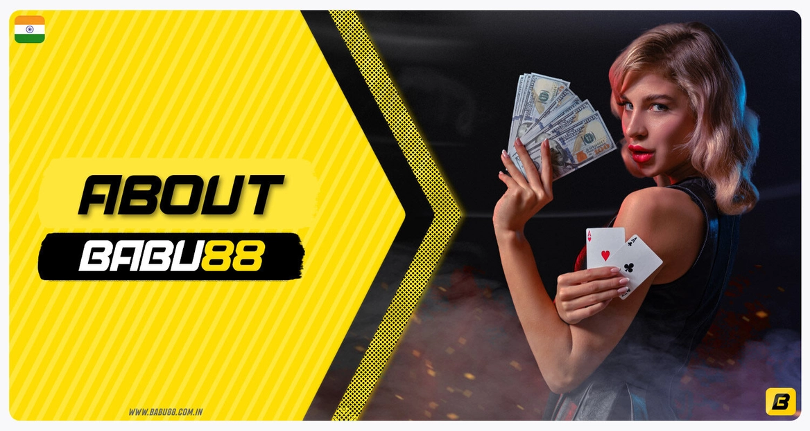
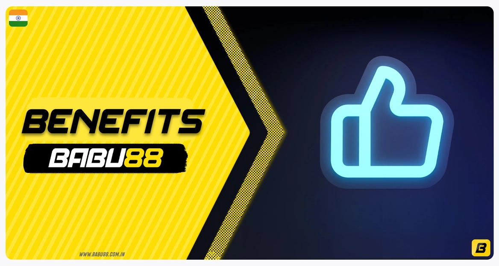
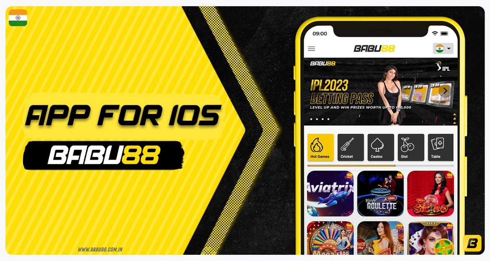
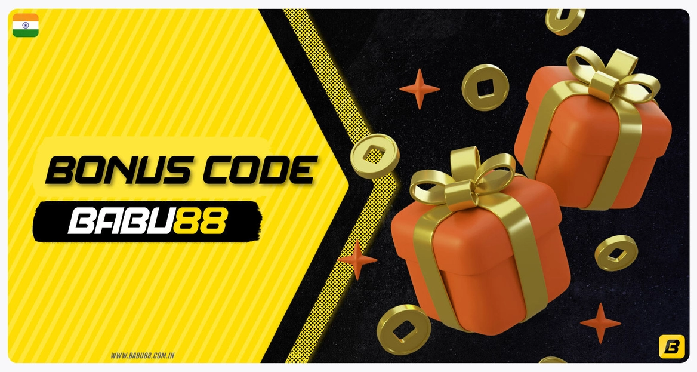
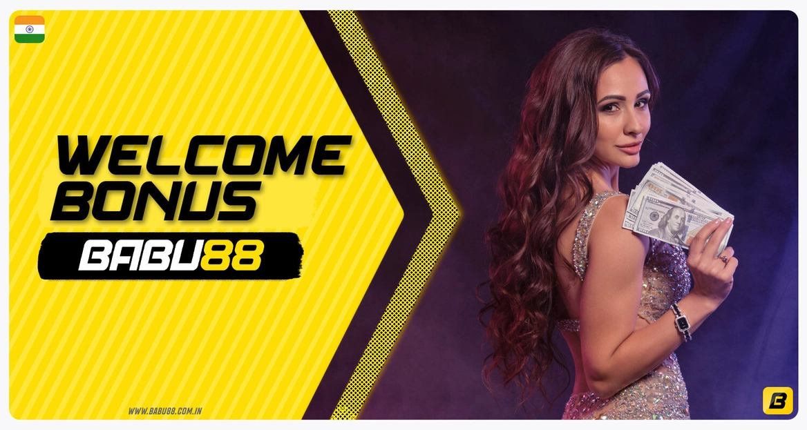
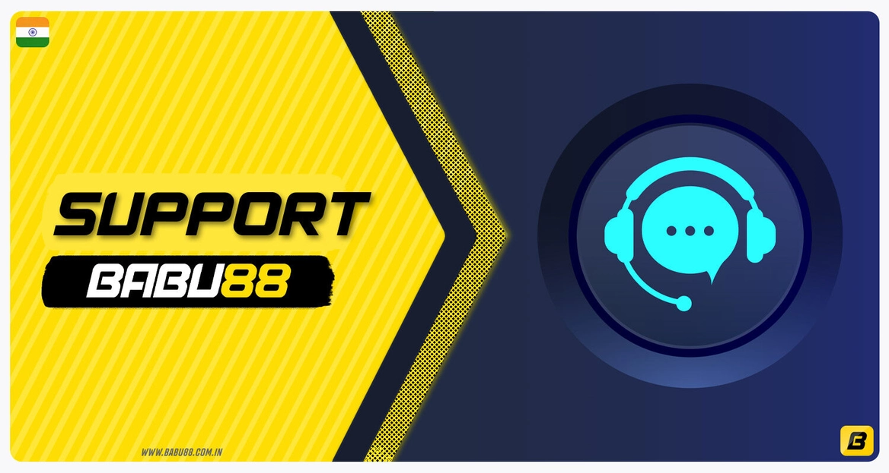

Babu88 India - official online Sports Betting and Casino Site
Babu88 is a representative of online gambling, which offers a full range of useful options for betting on sports and cybersports matches and casinos online. All services are fully legal and available to every user over the age of 18.
On this page we would like to share with you all the basic information about the gambling options available here, as well as a detailed guide on how to bet on Babu88 and win with a welcome bonus of up to INR 10,000!
About Babu88
Babu88 is one of the best new representatives of gambling in India, established in 2014. The company offers its services legally, acting under Malta Gaming Authority license. At the moment, the total audience of users is measured in tens of thousands, and their number is constantly growing. Here you will find a large selection of sports available for betting in Line and Live, as well as a casino with hundreds of games for all tastes.
| Year of establishment | 2014 |
| Languages | English, Bengali |
| Sports and eSports Disciplines | Cricket. Football, Kabaddi, Basketball, Tennis, Volleyball, etc. |
| License | MGA (Malta Gaming Authority) |
| Types of bets | Single, Multi |
| Babu88 Casino Games | Slots, Jackpots, Live Casino, Card Games, Table Games, Roulette, TV Games, etc. |
| Live Streaming and Statistics Available | Yes |
| Currency | INR, BDT |
| Minimum / Maximum Deposit | INR 300 / INR 50,000 |
| Withdrawal Time | Up to 24 hours |
| Platforms | Website, Mobile Site, App for Android |
| Deposit Methods | Bank Transfer, UPI, Paytm, PhonePe |
| Support team | Email, Live Chat |
Benefits of Babu88
During our review of Babu88, we noted a number of really important advantages, thanks to which you will have a positive gambling experience:
Advantages
- More than 30 sports disciplines, several betting platforms, the availability of the exchange;
- Welcome bonuses for betting and casino fans;
- The presence of animated live broadcasts of matches available for viewing to each authorized user;
- Own betting exchange;
- Legal in India and licensed by MGA;
- Availability of free mobile applications for Android and iOS;
- Hundreds of casino games from well-known and licensed providers.
The list is much wider, and each bettor pays attention to specific details and nuances, but we can say that the bookmaker has tried to satisfy everyone's interests.
Download Babu88 Mobile App

If you prefer mobile betting, you can download the Babu88 mobile app for free to your Android and iOS device. Here are the main points of the app that you need to know:
- You have full control over your balance, your account, and you can win at sports or casino betting whenever and wherever you want with a few taps on the screen;
- The interface is simplified, allowing you to navigate quickly;
- The app can send notifications to your smartphone;
- The app has low size and system requirements;
- You also have the ability to watch live matches;
- The app has an automatic update download feature.
Babu88 App for iOS
To install the app for iOS, you need to have version 11.0 of the operating system or higher. All of the main graphics are built into the system, which will provide a very fast loading speed for the pages you need.
To install the application:
- Open the Babu88 mobile site using Safari or any other browser;
- Navigate to the app page through the menu, or ask for a link from support;
- Download the file and install the app on your smartphone.
How to Verify Babu88 Account in India?

Verification is a compulsory process that every new user of Babu88 goes through. By completing it, you confirm that you are a real person over the age of 18. The verification process is done upon request, if you receive it from the Babu88 support team and then you are required to:
- Login to your account with your email/phone number and password;
- Go to the Profile section;
- Fill in the data — Full Name, date of birth and OTP (received on your cell phone);
- Provide the support team with photos of your identity documents, a passport or a driving license will do;
- Wait while Babu88 staff processes your verification request.
You can also initiate the verification procedure by contacting support via Live Chat.
Once logged in, you will automatically be taken to the home page. All you have to do is select the betting or casino section you want and start playing.
How to Start Betting on Babu88

Since the interface of the site is intuitive and all processes are simplified, bets are processed as quickly as possible:
- Log into your account and go to Sportsbook;
- Select your preferred betting platform (BTI Sportsbook or IBC Sports);
- Select any sports or eSports discipline and match;
- Select one of the markets (outcomes) you are interested in and click on it;
- Decide on the amount of your bet and enter it in the window;
- Confirm your bet.
Your bet is processed instantly, and after placing it you only have to wait for the end of the match. Your winnings will be automatically added to your balance and you will be able to withdraw them from Babu88.
Babu88 Bonus Code
As part of promotions Babu88 creates promo codes to attract new users. Using them when registering, new gamers can get extra money on their balance and use them in sports betting or casino games.
That way your account will be created and you will get an extra bonus.
Welcome Bonus
For all new users from India, Babu88 offers three welcome bonuses to choose from. Each of them is designed for different types of gamblers:
- Sports Betting and eSport;
- Live Casino;
- Slots.
We've researched the information about each of the new player bonuses and want to give you all the details about them.
Sports Welcome Bonus
If you select this offer, you will receive an additional 100% of your first deposit up to INR 12,000 in the form of cash added to your account. This money can be used to gamble on any sports or esports games in order to earn more money. You can even withdraw this money if you meet the wagering requirements mentioned in the table:
| Sports Welcome Bonus offer | 100% up to INR 12,000 |
| Turnover | 13x |
| How to use | Sports and eSports Bets |
Live Casino Welcome Bonus
A bonus that all Live Casino enthusiasts will appreciate. By participating in the promotion, you will receive a 100% bonus on your deposit up to INR 20,000. You can use it to play games with LIVE dealers and win, then withdraw your winnings if the following conditions are met:
| Live Casino Welcome Bonus offer | 100% up to INR 20,000 |
| Turnover | 30x |
| How to use | Slots |
| Provider | Evolution Gaming, Superspade, Pragmatic Play, AE Casino, AE King Maker |
Slots Welcome Bonus
As part of this welcome offer, you will receive 100% up to INR 15,000 on your first deposit to use on Babu88's slots. The bonus is also granted in the form of bonus money, which can be withdrawn if the following conditions are met:
| Slots Welcome Bonus offer | 100% up to INR 15,000 |
| Turnover | 18x |
| How to use | Slots |
Sports Betting at Babu88

At Babu88 users have access to two world-renowned betting platforms: BTI and IBC. On them you will find more than 30 sports disciplines and will be able to bet on any official match on any of them. The list of available sports disciplines includes:
- Cricket;
- Soccer;
- Tennis;
- Hockey;
- Volleyball;
- Basketball;
- Golf;
- Boxing;
- MMA;
- Horse racing and much more!
In this case, each platform has its own markets and odds, allowing you to choose the right one for you. Betting is accessible in two modes: LINE and LIVE. You can also check the data from recent team meetings. There will be no live sports broadcasts, but there will be animated broadcasts that provide a detailed perspective of what is happening on the field without requiring a high internet bandwidth.
Babu88 Casino

Any fan of casino games can find something interesting for themselves on Babu88. Here you will find hundreds of games from famous licensed providers such as Pragmatic, JILI, Playsoft, Spade Gaming, Spribe, Betsoft, Playtech and others. The list of game categories available with us includes:
- Slots;
- Video Slots;
- Video Poker;
- Roulette;
- Baccarat;
- Blackjack;
- Dice;
- Dragon Tiger;
- Monopoly Big Baller;
- Cricket War;
- Megawheel;
- Crazy Time and much more!
Babu88 partners with the providers directly, which means that as soon as they release new casino games, you get access to them. The navigation in the sections with casino games is also very convenient, and if you're looking for something specific, you can use the search bar.
Payment Methods

Babu88 currently offers several methods by which you can deposit INR into your balance. The minimum deposit is INR 200 for all payment systems. You can read more about each of them and their limits in our table:
| Payment Method | Minimum Deposit, INR | Maximum Deposit, INR | Minimum Withdrawal, INR | Withdrawal Time | Commission |
|---|---|---|---|---|---|
| UPI | 200 | 30,000 | 800 | Up to 24 hours | None |
| Paytm | 200 | 30,000 | 800 | Up to 24 hours | None |
| PhonePe | 200 | 30,000 | 800 | Up to 24 hours | None |
| Local Bank | 200 | 30,000 | 800 | Up to 24 hours | None |
Is Babu88 Legal in India?

Yes, Babu88 is completely legal in India and accepts players based on the local legal laws of the country. First of all, the bookmaker does not have any gambling establishments in India and offers its services in online sports betting and casinos via the Internet.
The company is also internationally licensed by the Malta Gaming Authority (MGA), which confirms its honesty, reliability, knowledge and compliance with regional laws.
Support
You can contact support at any time if you have questions about your account or if you want to know more about the functionality of Babu88. Support is available 24 hours a day and can be reached in two ways:
| Communication Method | Contact Details | How to use |
|---|---|---|
| Live Chat | Available around the clock on all bookie platforms | Basic questions about account, payment, bonuses and other options |
| CS@BABU88.com | Questions that require individual attention |
FAQ
Who can create a gambling account at Babu88?
Every user from India, who is of legal age, can create an account.
Babu88 is real or fake?
Babu88 is a reliable bookmaker offering sports betting services in India as well as casinos under license and local laws.
Can I download the bookmaker app on my smartphone for free?
Yes, the Babu88 app is totally free and you can download it from the official mobile site.
Can I fund my account with rupees to play for real money?
Yes, you can use UPI, Paytm, PhonePe to top up your account in rupees.
Can I watch live sports matches?
Yes, users from India can follow sports events via streaming without any problem.
Can I make Babu88 bet login on a mobile site?
Yes, you can login to your Babu88 account from any browser on your smartphone.